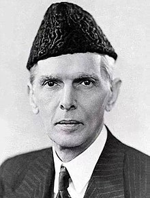
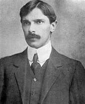
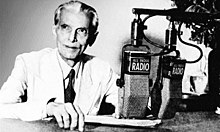
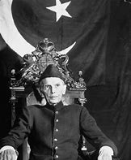

Muhammad Ali Jinnah (Urdu pronunciation: [moɦəmːəd̪ əliː d͡ʒɪnːɑːɦ], Gujarati pronunciation: [məɦ(ə)&məd̪ əli d͡ʒʱiɽ̃ɑ]; born Mahomedali Jinnahbhai; 25 December 1876 – 11 September 1948) was a barrister, politician, and the founder of Pakistan. Jinnah served as the; leader of the All-India Muslim League from 1913 until the inception of Pakistan on 14 August 1947, andthen as the Dominion of Pakistan's first governor-general until his death. Born at Wazir Mansion in Karachi, Jinnah was trained as a barrister at Lincoln's Inn in London. Upon his return to India, he enrolled at the Bombay High Court, and took an interest in national politics, which eventually replaced his legal practice. Jinnah rose to prominence in the Indian National Congress in the first two decades of the 20th century. In nbsp;&these early years of his political career, Jinnah advocated Hindu–Muslim unity, helping to shape the 1916 Lucknow Pact between the Congress and the All-India Muslim League, in which Jinnah had also become prominent. Jinnah became a key leader in the All-India Home Rule League, and proposed a fourteen-point constitutional reform plan to safeguard the political rights of Muslims in the Indian subcontinent. In 1920, however, Jinnah resigned from the Congress when it agreed to follow a campaign of satyagraha, which he regarded as political anarchy.
By 1940, Jinnah had come to believe that the Muslims of the subcontinent should have their own state to avoid the possible marginalised status they may gain in an independent Hindu– Muslim state. In that year, the Muslim League, led by Jinnah, passed the Lahore Resolution, demanding a separate nation for Indian Muslims. During the Second World War, the Muslim League gained strength while leaders of the Congress were imprisoned, and in the & provincial elections held shortly after the war, it won most of the seats reserved for Muslims. Ultimately, the Congress and the Muslim League could not reach a power-sharing formula that would allow the entirety of British India to be united as a single state following independence, leading all parties to agree instead to the independence of a predominantly Hindu India, and for a Muslim-majority state of Pakistan.